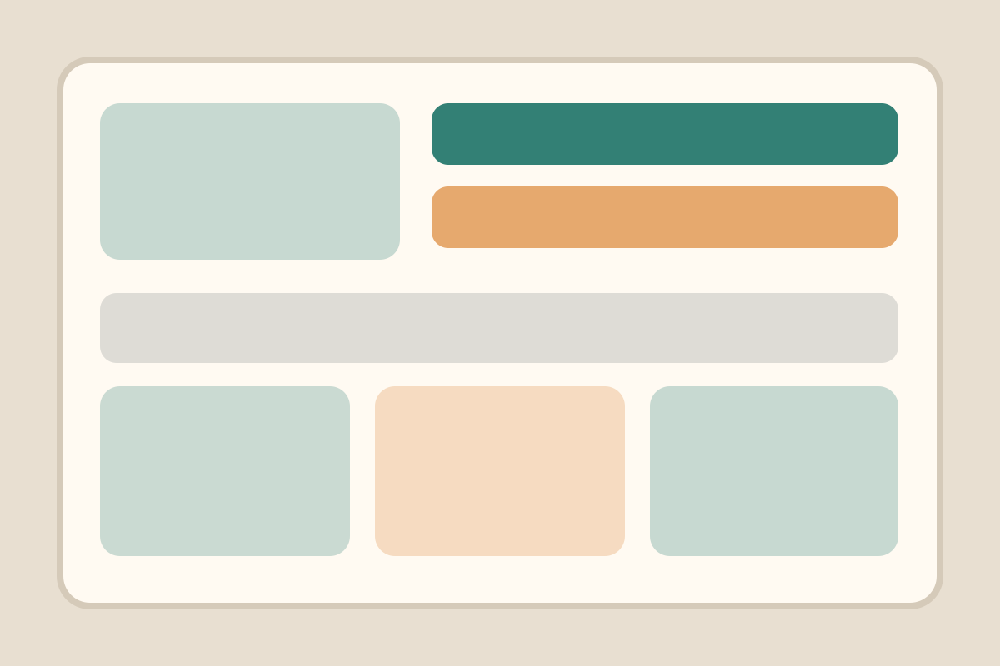

Earned from volunteering, event attendance, and policy feedback.
Citizen Experience
My Dashboard
A citizen-facing profile view showing loyalty points, engagement history, current tier, recent service ratings, and recommended next steps.
Gold Citizen
1,240 loyalty points
4.8 service rating average

Unlocked after consistent program participation across three civic categories.
Needed to become a Volunteer Champion and access fast-track event registration.
Submitted after a neighborhood services call with positive comments about clarity.
Profile Snapshot
Ava Thompson
- Preferred Programs
- Parks, sustainability, youth mentoring
- Recent Contact
- Service center visit, April 24
- Top Achievement
- River Cleanup Leader
- Advocacy Potential
- High
| Action | Date | Points | Outcome |
|---|---|---|---|
| River cleanup volunteer shift | Apr 22 | +25 | Milestone badge earned |
| Zoning improvement survey | Apr 18 | +10 | Recommendations updated |
| Service center visit rating | Apr 14 | +5 | 5-star review submitted |
| Library reading mentor signup | Apr 08 | +20 | Pending orientation confirmation |
Next Best Action
Register for tree planting
Aligns with high sustainability participation and unlocks a near-term milestone.
Recognition
Share your badge
Prompt citizen advocacy by letting Ava celebrate the latest River Cleanup Leader milestone.
Service Feedback
Rate your last interaction
Citizen can submit a quick service rating to help management improve training and service quality.